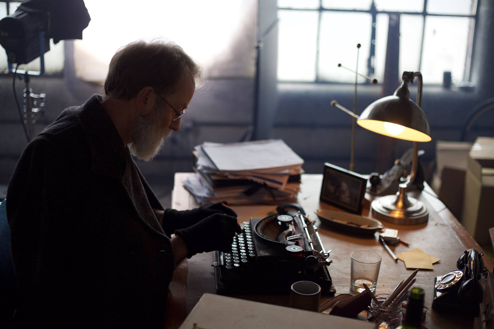
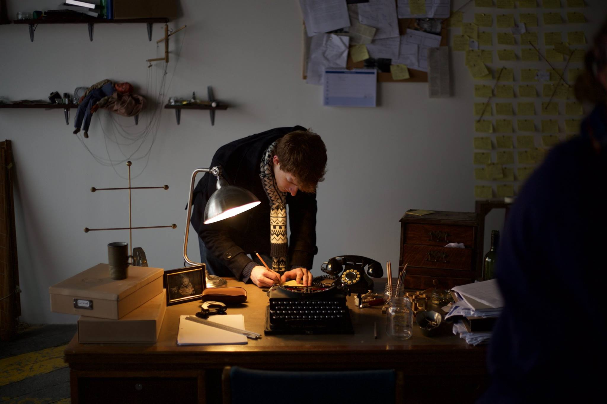
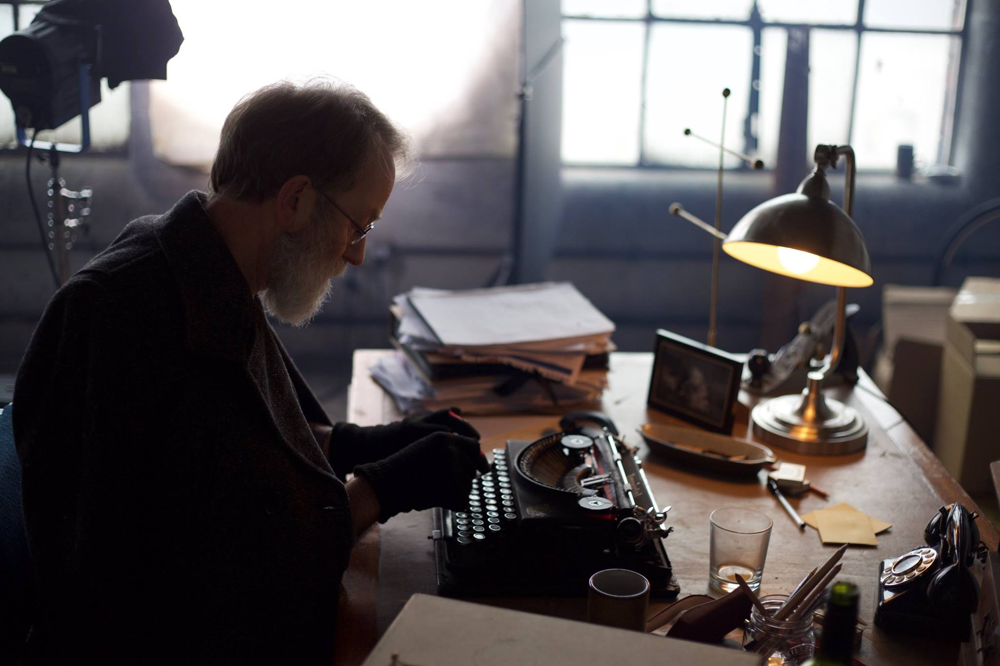
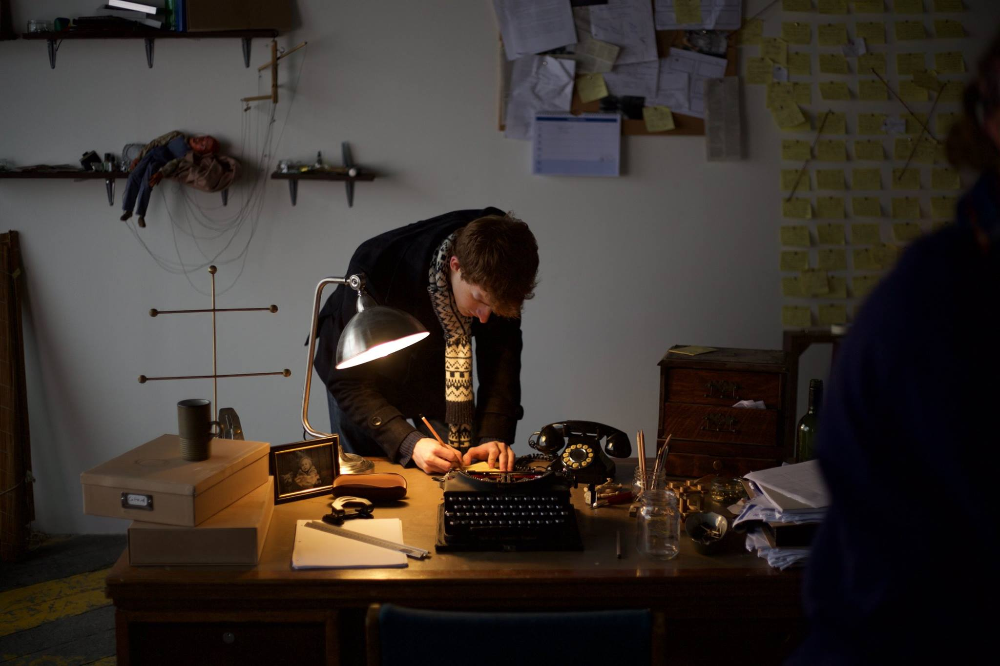

I am God, and severely underqualified
Behind the video:
The second short film I wrote that was made entirely. This one is a little more... Abstract than Amber, but I really do have a soft spot for it. In many ways I wanted to do something experimental, and specifically toy with writing technique and narrative in a (hopefully) thought provoking way. I have no idea if I succeeded in making it thought provoking, but it certainly twists the expectation of a traditional story! If you are also a big word nerd like I am, you might also highlight that the last third of the script is written as a lipogram, without the use of one letter of the alphabet, for specific plot reasons. The letter 'a' was chosen, to pull back the curtain a bit, because it is the second most frequently used vowel in the English language, the first being 'e', but 'e' was sadly used in another crucial line for the narrative. It was an interesting challenge, and I wouldn't be ashamed if that's what people remembered of the writing after watching it. Lipograms, by the way, are kind of awesome, and you can indulge in some research on it at The Phrontistery (amazing website) here.
I want to talk about plot quite a bit, because there is a fair bit to say, but I also don't want to just lay all of my cards on the table at once... I can say that there is a very gradual shift in control throughout the short film, and that the typewriter that you see is of pretty crucial significance. I can also tell you with complete freedom that the entire short was significantly inspired by Spaceballs, but that is kind of as much as I can say before it is released...
I would like to give the typewriter a lot of attention here too, mostly because it is a truly beautiful machine. It is an Imperial Good Companion model, made in the 40s I think, and we were very lucky to have been able to source it from a couple in London who couldn't fix it. I put on my tinkering hat and brought it up to full working order again (and then I had to deliberately jam the 'a' key), and I had no idea how amazing typewriters are before that. There's a real action-reaction part of it that just appeals to me, but I will try not to gush too much. The short has some great shots of the mechanics in action, and a great deal of shots of those beautiful, beautiful keys.
Aside from being a writer and typewriter mechanic for this shoot, I also had a handful of other odd jobs. For example, I had a small part in set design by writing about 200 sticky notes worth of 'notes' for the main character's walls. I also got the title of 'drip master' by making a detached sprinkler system start dripping again, as well as aiming drips into a small cup from 15 feet up. This was the first time I was the 1st assistant director too (and I took on this role in pretty much every shoot after this), so general set organisation, as well as timekeeping, was involved too on both the shoot day on location, and the voiceover day in the recording studio. The strangest job though is the reason that I had to get the typewriter actually typing... I had to type out the entire script while being recorded without making a single mistake, and if I did make a mistake, I had to start that entire page again. I typed slowly. Incredibly slowly. Our editor was not a fan of speeding up these shots in post either, needless to say.
Behind-the-scenes Photographs
 


